Introducción
En esta entrega nos disponemos a entender y utilizar las distintas opciones de representación gráfica que nos proporciona R. Para ello, vamos a utilizar una biblioteca que nos proporcionará una gran variedad de conjuntos de datos, con los que podremos trabajar estudiando gráficamente sus distintas propiedades. Para ello, la cargaremos con la siguiente orden:
¿Cuántos conjuntos de datos nos proporciona? Muchos, entre ellos el dataset más utilizado para ejemplos en ciencia de datos, iris. Podemos ver todos de la siguiente manera:
# Realmente este código muestra la información por terminal, así que
# escribiremos el resultado entre comentarios
library(help="datasets")
# AirPassengers Monthly Airline Passenger Numbers 1949-1960
# BJsales Sales Data with Leading Indicator
# BOD Biochemical Oxygen Demand
# CO2 Carbon Dioxide Uptake in Grass Plants
# ChickWeight Weight versus age of chicks on different diets
# DNase Elisa assay of DNase
# EuStockMarkets Daily Closing Prices of Major European Stock
# Indices, 1991-1998
# Formaldehyde Determination of Formaldehyde
# HairEyeColor Hair and Eye Color of Statistics Students
# Harman23.cor Harman Example 2.3
# Harman74.cor Harman Example 7.4
# [...]
# iris Edgar Anderson's Iris Data
# islands Areas of the World's Major Landmasses
# lh Luteinizing Hormone in Blood Samples
# [...]
Con esto, comencemos nuestro trabajo.
Funciones plot, text y symbols
Comenzaremos estudiando y representando estas tres funciones en un mismo gráfico, pues pueden ser usadas de manera complementaria. La primera de ellas es la función plot, una función simple que se encarga de generar un gráfico del conjunto de datos que le pasemos. Llamando a la función sin parámetros obtenemos una representación muy básica, por la que añadiremos unos cuantos parámetros para darle color, así como nombres a los ejes, etc.
# Definimos una curva a representar
lemniscata <- function(t){
return(
list(
x=3*sin(t)/(1+cos(t)^2),
y=3*sin(t)*cos(t)/(1+cos(t)^2)
)
)
}
# Definimos los puntos en los que evaluar la curva
t=seq(0,2*pi, by=pi/50)
# Dibujamos la gráfica, uniendo los puntos por líneas, y dándole color rojo
plot(lemniscata(t)$x, lemniscata(t)$y, type="l", col="red", xlab="x", ylab="y")
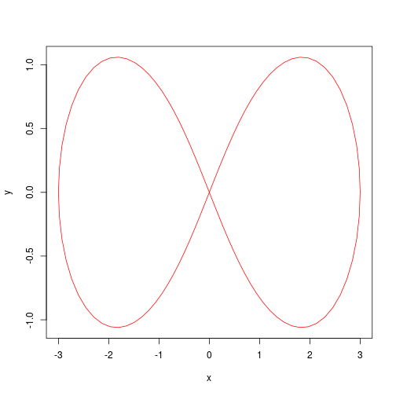
Con esta función también podremos representar gráficas de puntos, y en el caso de que tengamos un conjunto de datos con varios atributos, una matriz de gráficas de puntos, también llamada scatter matrix.
# Seleccionamos los atributos que queremos representar
library(dplyr)
iris_plot <- select(iris, "Sepal.Length", "Petal.Length", "Sepal.Width", "Petal.Width")
# Imprimimos por pantalla la matriz de gráficas de puntos, dándole un color a cada atributo
plot(iris_plot,col=c("red","blue","orange","green"), pch=19,
labels=c("Longitud sépalo","Longitud pétalo","Ancho sépalo","Ancho pétalo"))
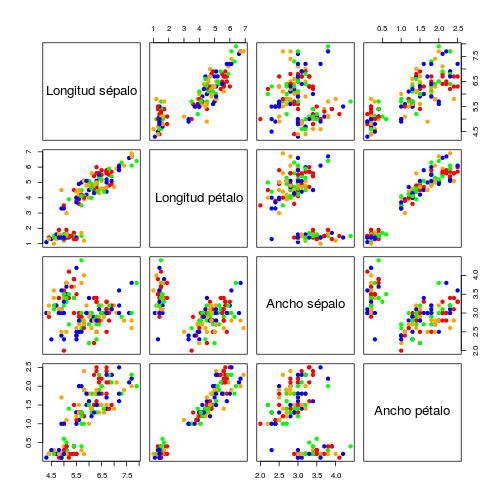
Visto esto, pasemos a la función text, que añade texto a un gráfico ya existente. Esta función es de gran uso para diferenciar diferentes elementos en una misma gráfica, y de esta manera la utilizaremos para nombrar en una gráfica una lemniscata y la función coseno.
# Comenzamos definiendo lo que vamos a representar por pantalla
plot(lemniscata(t)$x, lemniscata(t)$y, type="l", col="red", xlab="x", ylab="y", ylim=c(-1,1.5))
lines(x=seq(-2*pi,2*pi, by=0.05), y=cos(seq(-2*pi,2*pi, by=0.05)), col="blue")
# Ahora, añadimos el texto
text(x=2, y=1.3, labels=c("lemniscata\n", "\ncos(t)"), col=c("red","blue"), cex=1.5)
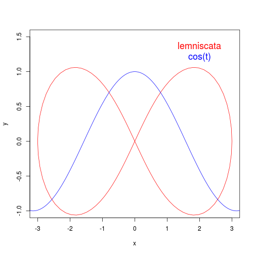
Por último, disponemos de la función symbols, que nos permitirá dibujar una gran cantidad de figuras como círculos, estrellas, cuadrados, etc. Admitirá como parámetros la posición determinada de estos objetos, su color o su tamaño entre muchos otros valores. Realmente no imagino qué utilidad puede tener salvo representar alguna figura sobre una función o una gráfica de puntos.
Funciones hist y curve
La función hist, que ya utilizamos en la entrega anterior, genera y devuelve un histograma de los datos que le pasemos por parámetro, de manera que podamos ver más facilmente la distribución de nuestros datos. En este caso, veamos la distribución del conjunto de datos cars, que contendrá la velocidad y la distancia de frenado de distintos coches. Para acceder a cada uno de sus atributos, utilizaremos cars$speed y cars$dist. Le daremos algo de color a cada histograma para que no quede muy simple.
hist(x=cars$speed, main="Histograma Velocidad", breaks=10, col="red",
xlab="Velocidad", ylab="Frecuencia", density=50)
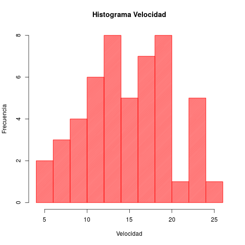
hist(x=cars$dist, main="Histograma Distancia", breaks=10, col="green",
xlab="Distancia", ylab="Frecuencia", density=50)
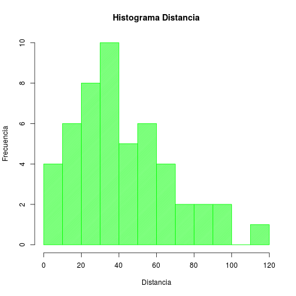
Por otra parte, tenemos el método curve, que representará una curva en una gráfica que mostrará por pantalla. La diferencia de este método con plot es que plot puede representar cualquier dato que le pasemos (numérico) mientras que curve es específco para representación de funciones. Además, con el parámetro add podremos añadir cualquier nueva función al gráfico ya generado previamente.
curve(log(x)*sin(3*x), 0, 10, col="red", xlim=c(-10,10),
xlab="x", ylab="y", main="Representación de curvas")
curve((x^3-3*x)/(3*x^2+1), -10, 10, col="green", add=TRUE)
text(x=-5, y=1.5, labels=c("log(x)*sin(3*x)\n\n", "\n(x^3-3*x)/(3*x^2+1)"),
col=c("red","green"), cex=1.5)
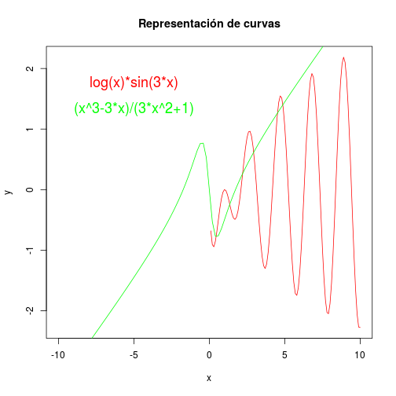
Funciones polygon, lines y points
Las tres funciones que vamos a tratar en este apartado se encargan de dibujar sobre un gráfico ya existente, es decir, añaden nueva información a la gráfica representada previamente como hacía, por ejemplo, la función text. La primera de ellas, polygon, dibuja polígonos definidos por sus vértices en un gráfico ya existente. Tiene una funcionalidad similar a la que tiene symbols, pero dando más libertad para dibujar la figura deseada.
curve(sin(x), -2*pi, 2*pi, col="blue", ylab="y")
polygon(x=c(-6.3,-0.1,-0.1,-pi), y=c(0,0,-1,-1),density=10,col="orange")
polygon(x=c(0.1,pi,6.3,0.1), y=c(1,1,0,0),density=10,col="green")
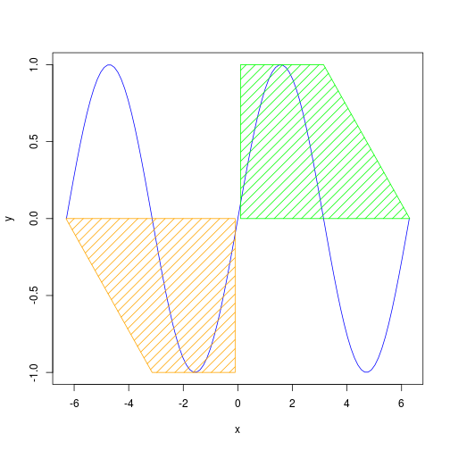
Las funciones lines y points tendrán el mismo funcionamiento que plot(type="l") y plot(type="p") respectivamente, pero en vez de generar un nuevo gráfico añadirán a uno ya existente. Aunque ya la hemos utilizado anteriormente para dibujar la lemniscata y el coseno, veamos algún otro ejemplo.
t=seq(-10,10,by=0.25)
# El valor type="o" significa que se representa por líneas y puntos
plot(x=t,y=t^2,col="red", type="o", ylab="y", ylim=c(-100,100))
lines(x=t,y=t^3,col="blue")
points(x=t,y=t^4,col="green")
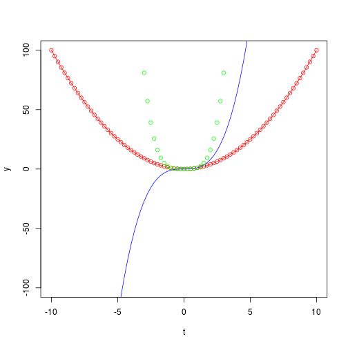
Funciones barplot y boxplot
La primera de estas funciones, barplot, genera gráficos de barras de maneras muy diversas. Para el ejemplo que vamos a realizar, utilizaremos el conjunto de datos mtcars, que contendrá información sobre las pruebas de distintos motores de coche en carretera. Para hacer un gráfico más visible, mostraremos la relación entre el tipo de motor (forma de V o recto) y el número de marchas.
barplot(height=table(mtcars$vs, mtcars$gear), col=c("green","yellow"), density=50,
main="Comparación entre\nNúmero de Marchas y tipo de motor", xlab="Número de marchas",
legend=c("tipo motor","numero marchas"))
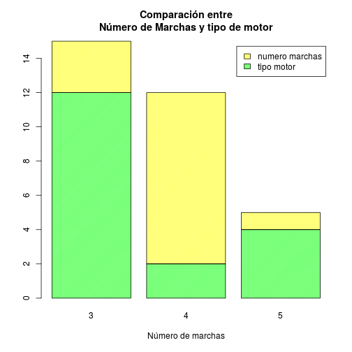
La función boxplot ya la utilizamos en la práctica anterior, y representaun gráfico de caja en el que aparecen datos como la media, los cuartiles o los valores extremos. Veamos el gráfico de la práctica pasada.
datos2 <- read.csv("./resources/data/Datos2.txt", header=TRUE, sep=" ")
datos2$Altura=datos2$Altura*100
boxplot(select(datos2, "Peso", "Altura", "Edad"), main="Diagrama de caja para Datos2.txt",
col=c("red","yellow","green"))
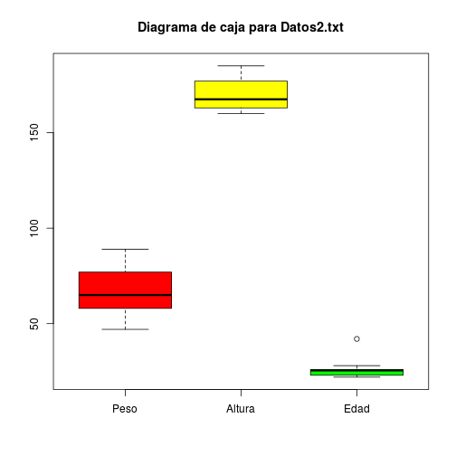
Función pairs y gráficos múltiples
En este apartado estudiamos función pairs, con la que podremos representar todos los diagramas de dispersión de un dataset con varias variables, más o menos como hicimos con la función plot y el dataset iris. Probemos con este mismo dataset de nuevo, pero mostrando también un histograma de cada atributo.
panel.hist <- function(x, ...)
{
usr <- par("usr"); on.exit(par(usr))
par(usr = c(usr[1:2], 0, 1.5) )
h <- hist(x, plot = FALSE)
breaks <- h$breaks; nB <- length(breaks)
y <- h$counts; y <- y/max(y)
rect(breaks[-nB], 0, breaks[-1], y, ...)
}
pairs(iris_plot, pch=19, diag.panel=panel.hist,col=c("red","blue","orange","green"),
labels=c("Longitud sépalo","Longitud pétalo","Ancho sépalo","Ancho pétalo"))
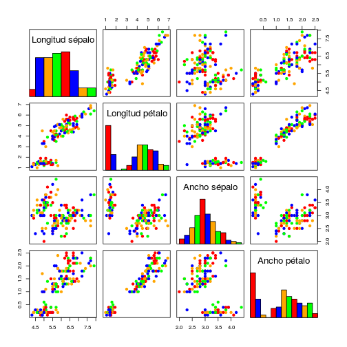
Con los argumentos mfrow y mfcol de la función par podemos separar nuestro dispositivo de impresión en distintas partes, para así representar varias gráficas en una misma imagen. Son métodos muy prácticos para representar información sobre un dataset de manera muy visual.
par(mfrow=c(1,3))
hist(trees$Girth,col="green",density=50)
hist(trees$Height,col="yellow",density=50)
hist(trees$Volume,col="red",density=50)
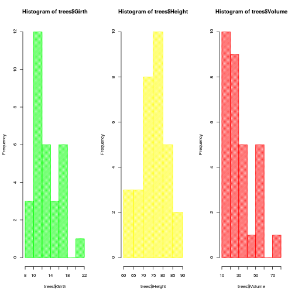
Diagramas de Sectores y de Estrellas
Veamos ahora los diagramas de sectores, o de tarta, de ahí el nombre de la función para representarlos, pie. Volvamos al dataset de los motores de coches, y esta vez veamos el número de carburadores, para ver cuál de los valores se da con más y menos frecuencia.
pie(table(mtcars$carb), main="Número de carburadores",
col=c("green","red","orange","blue","pink","yellow"),density=50)
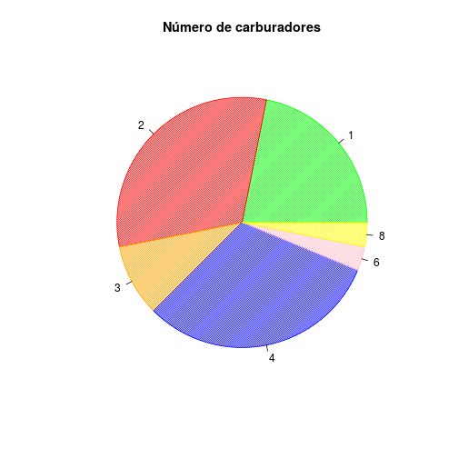
Por otra parte, el diagrama de estrellas realiza un diagrama en el que muestra la información de todas las variables, con el fin de poder compararlas entre ellas. En este caso, utilicemos el dataset iris que solo tienen 4 atributos y así tendremos una representación decente para entender este tipo de diagramas.
stars(iris_plot, col.segments=c("red","blue","orange","green"),
draw.segments=TRUE, key.loc = c(20, 1))
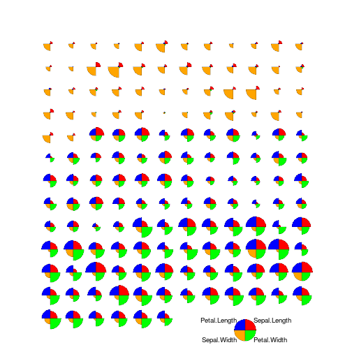
Representaciones Tridimensionales
Para finalizar esta entrega, veamos distintos métodos de representación en tres dimensiones. Empecemos por la función persp, ya utilizada en la práctica anterior.
f=function(x, y){
r = sqrt(x^2+y^2)
return(10 * sin(r)/r)
}
s=seq(-10, 10, by=0.5)
t=s
persp(x=s, y=t, z=outer(s, t, f), theta = 30, phi = 30, col = "orange")
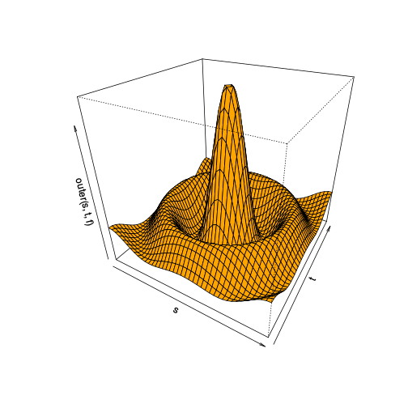
Con la función contour realizaremos un mapa de nivel. Utilizaremos el dataset volcano, que almacena los valores de la altitud del volcán Maunga Whau.
rx <- range(x <- 10*1:nrow(volcano))
ry <- range(y <- 10*1:ncol(volcano))
ry <- ry + c(-1, 1) * (diff(rx) - diff(ry))/2
tcol <- terrain.colors(12)
plot(x = 0, y = 0, type = "n", xlim = rx, ylim = ry, xlab = "", ylab = "")
u <- par("usr")
rect(u[1], u[3], u[2], u[4], col = tcol[8], border = "red")
contour(x, y, volcano, col = tcol[2], lty = "solid", add = TRUE,
vfont = c("sans serif", "plain"))
title("Mapa Topográfico del Volcán Maunga Whau", font = 4)
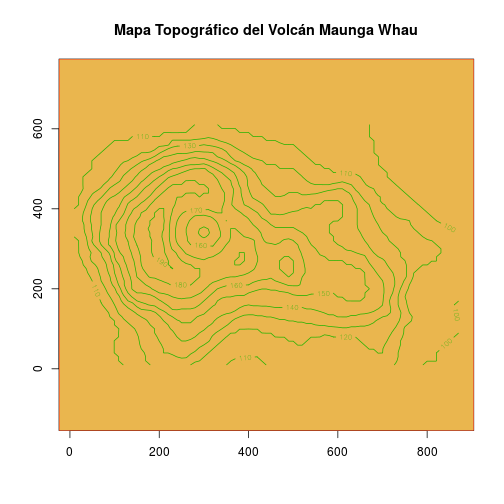
Finalmente, tendremos la función image, que se encarga de dibujar una gráfica con código de color o de escala de grises.
FIN